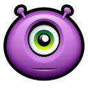

The Basic Way to Avoid an Alien Probing: Tacos
So you're just sitting there, minding your own business, drinking Busch Light in between shots of Fireball, when all of the sudden you see bright lights coming through the window. It's only 11 a.m., so the bright lights are a bit of a concern. Chances are, aliens from Uranus are coming to probe you and then abduct you along with any cattle that happen to be nearby.
In this post, we'll talk about ways to avoid being probed by aliens. We will learn how to accomplish this with Common Household Tacos, why it's important to have salsa in the fridge at all times, and why you should never eat all ten tacos in the party pack.
You mostly want to be paying attention to three body parts when being abducted by aliens from Uranus:
- Your anus
- Your mouth
- Your taco hand
A
L
I
E
N
S
Do the tacos need to be supreme? Yes!
The short answer is "Yes!" Aliens love tacos supreme. In fact, they know that the noun is plural, not the following adjective. This is similar to sergeants major. But you knew that because you went to DINFOS and studied the AP Style Guide.
Aliens are fantastic at identifying spelling and grammar errors, such as:
- Who, who's, whose
- It's and its
- They're, their, there
- Who or whom
- Whether or weather
- Dessert or desert
But you can never be sure if an alien from Uranus is a salsa bro or a supreme bro. Always try to get on a first name basis with the alien who's trying to abduct you. If they call you by your name, they may learn to look at you as more than an object to be probed, and more like a friend to do shots of Fireball with.